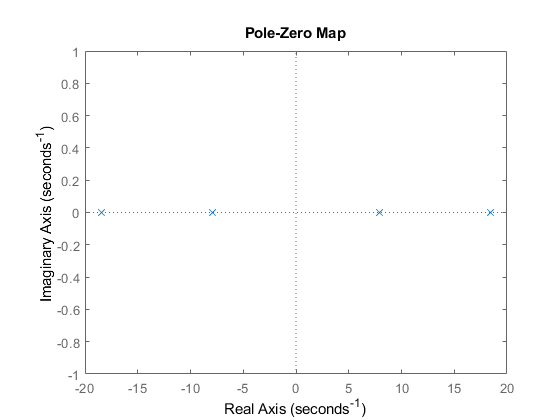

Contents
clc;
clear all;
1
syms m1 m2 m3 g r1 r2
syms x1 x2 x3 x4 x5 x6
m1 = 2;
m2 = 0.1;
m3 = 0.1;
r1 = 0.1;
r2 = 0.1;
g = 9.8;
a = 2+0.1;
b = cos(x3)*cos(x5);
c = sin(x3-x5);
d = 0.1*a*sin(x3)^2 + 2*0.1*c^2 + 2*0.1;
e = 2*0.1^2 + 2*0.1 + 2*0.1*0.1 + 2*2*0.1 + 2*0.1*cos(2*x5);
f = 0.1*a*sin(2*x3) - 2*0.1*sin(2*(x5-x3));
h = 0.1*0.1*sin(x3)*cos(x5) + 2*0.1*c;
Q=(0.1*9.8*a*sin(x3)*cos(x3))/(-d*x3);
W=0.1*0.1*a*x4*sin(x3)/d;
R=0.1*0.1*0.1*x6*(sin(x5-2*x3)-sin(x5))/(-2*d);
T=9.8*e*sin(x3)/(2*0.1*d*x3);
Y=f*x4/(-2*d);
U=2*0.1*9.8*b*sin(x5)/(-0.1*d*x5);
I=0.1*h*x6/(-0.1*d);
O=2*9.8*a*b*sin(x3)/(-0.1*d*x3);
P=2*0.1*a*c*x4/(0.1*d);
S=2*9.8*a*((cos(x3))^2)*sin(x5)/(0.1*d*x5);
D=2*0.1*x6*sin(2*(x5-x3))/(-2*d);
A_n = [0 1 0 0 0 0;0 0 Q W 0 R;0 0 0 1 0 0;0 0 T Y U I;0 0 0 0 0 1;0 0 O P S D];
B_n = [0 (m2+m3*c^2)/d 0 (m2*cos(x3)-m3*c*sin(x5))/(-r1*d) 0 (m2*cos(x3)-m3*c*sin(x5))/(-r1*d)]'
A_nn=[0 1 0 0 0 0 1 0 0 0 0 0;0 0 Q W 0 R 0 1 0 0 0 0;0 0 0 1 0 0 0 0 1 0 0 0;0 0 T Y U I 0 0 0 1 0 0;0 0 0 0 0 1 0 0 0 0 1 0;0 0 O P S D 0 0 0 0 0 1]
B_n =
0
(sin(conj(x3) - conj(x5))^2/10 + 1/10)/(sin(conj(x3) - conj(x5))^2/5 + (21*sin(conj(x3))^2)/100 + 1/5)
0
-(cos(conj(x3))/10 - (sin(conj(x5))*sin(conj(x3) - conj(x5)))/10)/(sin(conj(x3) - conj(x5))^2/50 + (21*sin(conj(x3))^2)/1000 + 1/50)
0
-(cos(conj(x3))/10 - (sin(conj(x5))*sin(conj(x3) - conj(x5)))/10)/(sin(conj(x3) - conj(x5))^2/50 + (21*sin(conj(x3))^2)/1000 + 1/50)
A_nn =
[0, 1, 0, 0, 0, 0, 1, 0, 0, 0, 0, 0]
[0, 0, -(1029*cos(x3)*sin(x3))/(500*x3*((21*sin(x3)^2)/100 + sin(x3 - x5)^2/5 + 1/5)), (21*x4*sin(x3))/(1000*((21*sin(x3)^2)/100 + sin(x3 - x5)^2/5 + 1/5)), 0, (x6*(sin(2*x3 - x5) + sin(x5)))/(1000*((21*sin(x3)^2)/50 + (2*sin(x3 - x5)^2)/5 + 2/5)), 0, 1, 0, 0, 0, 0]
[0, 0, 0, 1, 0, 0, 0, 0, 1, 0, 0, 0]
[0, 0, (sin(x3)*((49*cos(2*x5))/25 + 784/125))/(x3*((21*sin(x3)^2)/500 + sin(x3 - x5)^2/25 + 1/25)), -(x4*((21*sin(2*x3))/100 + sin(2*x3 - 2*x5)/5))/((21*sin(x3)^2)/50 + (2*sin(x3 - x5)^2)/5 + 2/5), -(49*cos(x3)*cos(x5)*sin(x5))/(25*x5*((21*sin(x3)^2)/1000 + sin(x3 - x5)^2/50 + 1/50)), -(x6*(sin(x3 - x5)/50 + (cos(x5)*sin(x3))/1000))/((21*sin(x3)^2)/1000 + sin(x3 - x5)^2/50 + 1/50), 0, 0, 0, 1, 0, 0]
[0, 0, 0, 0, 0, 1, 0, 0, 0, 0, 1, 0]
[0, 0, -(1029*cos(x3)*cos(x5)*sin(x3))/(25*x3*((21*sin(x3)^2)/1000 + sin(x3 - x5)^2/50 + 1/50)), (21*x4*sin(x3 - x5))/(50*((21*sin(x3)^2)/1000 + sin(x3 - x5)^2/50 + 1/50)), (1029*cos(x3)^2*sin(x5))/(25*x5*((21*sin(x3)^2)/1000 + sin(x3 - x5)^2/50 + 1/50)), (x6*sin(2*x3 - 2*x5))/(5*((21*sin(x3)^2)/50 + (2*sin(x3 - x5)^2)/5 + 2/5)), 0, 0, 0, 0, 0, 1]
syms xd1 xd2 xd3 xd4 xd5 xd6 real
syms x1 x2 x3 x4 x5 x6 real
syms u real
2
syms land
syms v1 v2 v3 v4 v5 v6
V =[v1;v2;v3;v4;v5;v6];
m1 = 2;
m2 = 0.1;
m3 = 0.1;
r1 = 0.1;
r2 = 0.1;
g = 9.8;
M = 2*m2^2 + m1*m3 + 2*m2*m3 + 2*m1*m2 + m1*m3;
A = [0 1 0 0 0 0; 0 0 (-((m2+m3)*g)/m1) 0 0 0; 0 0 0 1 0 0; 0 0 ((M*g)/(2*r1*m1*m2)) 0 (-(m3*g)/(r1*m2)) 0;
0 0 0 0 0 1; 0 0 (-((m2+m3)*g)/(r2*m2)) 0 (((m2+m3)*g)/(r2*m2)) 0];
B = [0 ;(1/m1);0;(-1/(r1*m1));0;0];
[~,~]=jordan(A);
s = tf('s')
syms a
C = [0 0 1 0 0 0;0 0 0 0 1 0]
D = [0;0]
G = ss2tf(A,B,C,D)
G = C*inv(s*eye(6)-A)*B+D
solve(vpa(-5*a^2 + 1.51e-13*a + 980))
solve(vpa(a^4 - 5.684e-14*a^3 - 401.8*a^2 + 1.182e-11*a + 2.113e04))
pzmap(G)
s =
s
Continuous-time transfer function.
C =
0 0 1 0 0 0
0 0 0 0 1 0
D =
0
0
G =
0 0 -5.0000 0 980.0000 0.0000 -0.0000
0 0 0 0 980.0000 0 0.0000
G =
From input to output...
-5 s^2 - 3.553e-14 s + 980
1: ------------------------------------------
s^4 + 6.217e-15 s^3 - 401.8 s^2 + 2.113e04
980
2: ------------------------------------------
s^4 + 6.217e-15 s^3 - 401.8 s^2 + 2.113e04
Continuous-time transfer function.
ans =
-13.999999999999984900000000000009
14.000000000000015100000000000007
ans =
-18.427566199902277804638854769571
-7.8882700225219465914063251571774
7.8882700225219764566683886422868
18.427566199902304779376791284462

syms s
eig(A)
sys = ss(A,B,C,D)
w = isstable(sys)
fi = (inv(s*eye(6)-A))
det = det(fi)
f = fi/det
fi_t =ilaplace(f)
ans =
0
0
-18.4277
-7.8880
18.4277
7.8880
sys =
A =
x1 x2 x3 x4 x5 x6
x1 0 1 0 0 0 0
x2 0 0 -0.98 0 0 0
x3 0 0 0 1 0 0
x4 0 0 205.8 0 -98 0
x5 0 0 0 0 0 1
x6 0 0 -196 0 196 0
B =
u1
x1 0
x2 0.5
x3 0
x4 -5
x5 0
x6 0
C =
x1 x2 x3 x4 x5 x6
y1 0 0 1 0 0 0
y2 0 0 0 0 1 0
D =
u1
y1 0
y2 0
Continuous-time state-space model.
w =
logical
0
fi =
[1/s, 1/s^2, -(49*(s^2 - 196))/(10*(5*s^5 - 2009*s^3 + 105644*s)), -(49*(s^2 - 196))/(10*(5*s^6 - 2009*s^4 + 105644*s^2)), 2401/(5*(5*s^5 - 2009*s^3 + 105644*s)), 2401/(5*(5*s^6 - 2009*s^4 + 105644*s^2))]
[ 0, 1/s, -(49*(s^2 - 196))/(10*(5*s^4 - 2009*s^2 + 105644)), -(49*(s^2 - 196))/(10*(5*s^5 - 2009*s^3 + 105644*s)), 2401/(5*(5*s^4 - 2009*s^2 + 105644)), 2401/(5*(5*s^5 - 2009*s^3 + 105644*s))]
[ 0, 0, -(5*(- s^3 + 196*s))/(5*s^4 - 2009*s^2 + 105644), (5*(s^2 - 196))/(5*s^4 - 2009*s^2 + 105644), -(490*s)/(5*s^4 - 2009*s^2 + 105644), -490/(5*s^4 - 2009*s^2 + 105644)]
[ 0, 0, (343*(3*s^2 - 308))/(5*s^4 - 2009*s^2 + 105644), -(5*(- s^3 + 196*s))/(5*s^4 - 2009*s^2 + 105644), -(490*s^2)/(5*s^4 - 2009*s^2 + 105644), -(490*s)/(5*s^4 - 2009*s^2 + 105644)]
[ 0, 0, -(980*s)/(5*s^4 - 2009*s^2 + 105644), -980/(5*s^4 - 2009*s^2 + 105644), -(- 5*s^3 + 1029*s)/(5*s^4 - 2009*s^2 + 105644), (5*s^2 - 1029)/(5*s^4 - 2009*s^2 + 105644)]
[ 0, 0, -(980*s^2)/(5*s^4 - 2009*s^2 + 105644), -(980*s)/(5*s^4 - 2009*s^2 + 105644), (196*(5*s^2 - 539))/(5*s^4 - 2009*s^2 + 105644), -(- 5*s^3 + 1029*s)/(5*s^4 - 2009*s^2 + 105644)]
det =
5/(5*s^6 - 2009*s^4 + 105644*s^2)
f =
[(s^6 - (2009*s^4)/5 + (105644*s^2)/5)/s, (s^6 - (2009*s^4)/5 + (105644*s^2)/5)/s^2, -(49*(s^2 - 196)*(s^6 - (2009*s^4)/5 + (105644*s^2)/5))/(10*(5*s^5 - 2009*s^3 + 105644*s)), -(49*(s^2 - 196)*(s^6 - (2009*s^4)/5 + (105644*s^2)/5))/(10*(5*s^6 - 2009*s^4 + 105644*s^2)), (2401*(s^6 - (2009*s^4)/5 + (105644*s^2)/5))/(5*(5*s^5 - 2009*s^3 + 105644*s)), (2401*(s^6 - (2009*s^4)/5 + (105644*s^2)/5))/(5*(5*s^6 - 2009*s^4 + 105644*s^2))]
[ 0, (s^6 - (2009*s^4)/5 + (105644*s^2)/5)/s, -(49*(s^2 - 196)*(s^6 - (2009*s^4)/5 + (105644*s^2)/5))/(10*(5*s^4 - 2009*s^2 + 105644)), -(49*(s^2 - 196)*(s^6 - (2009*s^4)/5 + (105644*s^2)/5))/(10*(5*s^5 - 2009*s^3 + 105644*s)), (2401*(s^6 - (2009*s^4)/5 + (105644*s^2)/5))/(5*(5*s^4 - 2009*s^2 + 105644)), (2401*(s^6 - (2009*s^4)/5 + (105644*s^2)/5))/(5*(5*s^5 - 2009*s^3 + 105644*s))]
[ 0, 0, -(5*(- s^3 + 196*s)*(s^6 - (2009*s^4)/5 + (105644*s^2)/5))/(5*s^4 - 2009*s^2 + 105644), (5*(s^2 - 196)*(s^6 - (2009*s^4)/5 + (105644*s^2)/5))/(5*s^4 - 2009*s^2 + 105644), -(490*s*(s^6 - (2009*s^4)/5 + (105644*s^2)/5))/(5*s^4 - 2009*s^2 + 105644), -(490*(s^6 - (2009*s^4)/5 + (105644*s^2)/5))/(5*s^4 - 2009*s^2 + 105644)]
[ 0, 0, (343*(3*s^2 - 308)*(s^6 - (2009*s^4)/5 + (105644*s^2)/5))/(5*s^4 - 2009*s^2 + 105644), -(5*(- s^3 + 196*s)*(s^6 - (2009*s^4)/5 + (105644*s^2)/5))/(5*s^4 - 2009*s^2 + 105644), -(490*s^2*(s^6 - (2009*s^4)/5 + (105644*s^2)/5))/(5*s^4 - 2009*s^2 + 105644), -(490*s*(s^6 - (2009*s^4)/5 + (105644*s^2)/5))/(5*s^4 - 2009*s^2 + 105644)]
[ 0, 0, -(980*s*(s^6 - (2009*s^4)/5 + (105644*s^2)/5))/(5*s^4 - 2009*s^2 + 105644), -(980*(s^6 - (2009*s^4)/5 + (105644*s^2)/5))/(5*s^4 - 2009*s^2 + 105644), -((- 5*s^3 + 1029*s)*(s^6 - (2009*s^4)/5 + (105644*s^2)/5))/(5*s^4 - 2009*s^2 + 105644), ((5*s^2 - 1029)*(s^6 - (2009*s^4)/5 + (105644*s^2)/5))/(5*s^4 - 2009*s^2 + 105644)]
[ 0, 0, -(980*s^2*(s^6 - (2009*s^4)/5 + (105644*s^2)/5))/(5*s^4 - 2009*s^2 + 105644), -(980*s*(s^6 - (2009*s^4)/5 + (105644*s^2)/5))/(5*s^4 - 2009*s^2 + 105644), (196*(5*s^2 - 539)*(s^6 - (2009*s^4)/5 + (105644*s^2)/5))/(5*s^4 - 2009*s^2 + 105644), -((- 5*s^3 + 1029*s)*(s^6 - (2009*s^4)/5 + (105644*s^2)/5))/(5*s^4 - 2009*s^2 + 105644)]
fi_t =
[(105644*dirac(1, t))/5 - (2009*dirac(3, t))/5 + dirac(5, t), (105644*dirac(t))/5 - (2009*dirac(2, t))/5 + dirac(4, t), (4802*dirac(1, t))/25 - (49*dirac(3, t))/50, (4802*dirac(t))/25 - (49*dirac(2, t))/50, (2401*dirac(1, t))/25, (2401*dirac(t))/25]
[ 0, (105644*dirac(1, t))/5 - (2009*dirac(3, t))/5 + dirac(5, t), (4802*dirac(2, t))/25 - (49*dirac(4, t))/50, (4802*dirac(1, t))/25 - (49*dirac(3, t))/50, (2401*dirac(2, t))/25, (2401*dirac(1, t))/25]
[ 0, 0, dirac(5, t) - 196*dirac(3, t), dirac(4, t) - 196*dirac(2, t), -98*dirac(3, t), -98*dirac(2, t)]
[ 0, 0, (1029*dirac(4, t))/5 - (105644*dirac(2, t))/5, dirac(5, t) - 196*dirac(3, t), -98*dirac(4, t), -98*dirac(3, t)]
[ 0, 0, -196*dirac(3, t), -196*dirac(2, t), dirac(5, t) - (1029*dirac(3, t))/5, dirac(4, t) - (1029*dirac(2, t))/5]
[ 0, 0, -196*dirac(4, t), -196*dirac(3, t), 196*dirac(4, t) - (105644*dirac(2, t))/5, dirac(5, t) - (1029*dirac(3, t))/5]
syms t
u = 1/s
x_0 = [1;0;0;0;0;0]
X = fi*x_0 + fi*B*u
Y = C*fi*x_0 + C*fi*B*u +D *u
u =
1/s
x_0 =
1
0
0
0
0
0
X =
(1/(2*s^2) + (49*(s^2 - 196))/(2*(5*s^6 - 2009*s^4 + 105644*s^2)))/s + 1/s
((49*(s^2 - 196))/(2*(5*s^5 - 2009*s^3 + 105644*s)) + 1/(2*s))/s
-(25*(s^2 - 196))/(s*(5*s^4 - 2009*s^2 + 105644))
(25*(- s^3 + 196*s))/(s*(5*s^4 - 2009*s^2 + 105644))
4900/(s*(5*s^4 - 2009*s^2 + 105644))
4900/(5*s^4 - 2009*s^2 + 105644)
Y =
-(25*(s^2 - 196))/(s*(5*s^4 - 2009*s^2 + 105644))
4900/(s*(5*s^4 - 2009*s^2 + 105644))
rref(A)
[V,J]=jordan(A)
A_3 =jordan(A)
B_2 = inv(V)*B
C_2 = C*V
D_2 = D
ans =
0 1 0 0 0 0
0 0 1 0 0 0
0 0 0 1 0 0
0 0 0 0 1 0
0 0 0 0 0 1
0 0 0 0 0 0
V =
0.0045 0 -0.0002 -0.0000 0.0002 0.0000
0 0.0045 -0.0019 -0.0004 -0.0019 -0.0004
0 0 0.0153 0.0070 -0.0153 -0.0070
0 0 0.1206 0.1294 0.1206 0.1294
0 0 0.0224 -0.0096 -0.0224 0.0096
0 0 0.1767 -0.1767 0.1767 -0.1767
J =
0 1.0000 0 0 0 0
0 0 0 0 0 0
0 0 7.8880 0 0 0
0 0 0 18.4277 0 0
0 0 0 0 -7.8880 0
0 0 0 0 0 -18.4277
A_3 =
0 1.0000 0 0 0 0
0 0 0 0 0 0
0 0 7.8880 0 0 0
0 0 0 18.4277 0 0
0 0 0 0 -7.8880 0
0 0 0 0 0 -18.4277
B_2 =
-0.0000
100.0000
-10.0000
-10.0000
-10.0000
-10.0000
C_2 =
0 0 0.0153 0.0070 -0.0153 -0.0070
0 0 0.0224 -0.0096 -0.0224 0.0096
D_2 =
0
0
9
R=ctrb(A,B)
rank(R)
O=obsv(A,C)
rank(O)
T_2 = [0 0 1 0 0 0;0 0 0 1 0 0;0 0 0 0 1 0;0 0 0 0 0 1;1 1 0 0 0 0;0 1 0 0 0 0]
A_c = T_2*A*inv(T_2)
B_c = T_2*B
C_c = C*inv(T_2)
A_bar_o = [0 1 0 0;205.8 0 -98 0;0 0 0 1;-196 0 196 0]
A_bar_o_bar = [0 1;0 0]
A_bar_21 = [-0.98 0 0 0;-0.98 0 0 0]
A_bar_0 = [0 0;0 0;0 0;0 0]
B_bar_o = [0 -0.5 0 0]'
B_bar_o_bar = [0.5 0.5]'
C_bar_o = [1 0 0 0;0 0 1 0]
Res_3 = rank(ctrb(A_bar_o,B_bar_o))
Res_4 = rank(obsv(A_bar_o,C_bar_o))
R =
1.0e+05 *
0 0.0000 0 0.0000 0 0.0101
0.0000 0 0.0000 0 0.0101 0
0 -0.0001 0 -0.0103 0 -3.0781
-0.0001 0 -0.0103 0 -3.0781 0
0 0 0 0.0098 0 3.9376
0 0 0.0098 0 3.9376 0
ans =
6
O =
1.0e+04 *
0 0 0.0001 0 0 0
0 0 0 0 0.0001 0
0 0 0 0.0001 0 0
0 0 0 0 0 0.0001
0 0 0.0206 0 -0.0098 0
0 0 -0.0196 0 0.0196 0
0 0 0 0.0206 0 -0.0098
0 0 0 -0.0196 0 0.0196
0 0 6.1562 0 -3.9376 0
0 0 -7.8753 0 5.7624 0
0 0 0 6.1562 0 -3.9376
0 0 0 -7.8753 0 5.7624
ans =
4
T_2 =
0 0 1 0 0 0
0 0 0 1 0 0
0 0 0 0 1 0
0 0 0 0 0 1
1 1 0 0 0 0
0 1 0 0 0 0
A_c =
0 1.0000 0 0 0 0
205.8000 0 -98.0000 0 0 0
0 0 0 1.0000 0 0
-196.0000 0 196.0000 0 0 0
-0.9800 0 0 0 0 1.0000
-0.9800 0 0 0 0 0
B_c =
0
-5.0000
0
0
0.5000
0.5000
C_c =
1 0 0 0 0 0
0 0 1 0 0 0
A_bar_o =
0 1.0000 0 0
205.8000 0 -98.0000 0
0 0 0 1.0000
-196.0000 0 196.0000 0
A_bar_o_bar =
0 1
0 0
A_bar_21 =
-0.9800 0 0 0
-0.9800 0 0 0
A_bar_0 =
0 0
0 0
0 0
0 0
B_bar_o =
0
-0.5000
0
0
B_bar_o_bar =
0.5000
0.5000
C_bar_o =
1 0 0 0
0 0 1 0
Res_3 =
4
Res_4 =
4
10
sys = ss(A,B,C,D);
sysr = minreal(sys);
2 states removed.